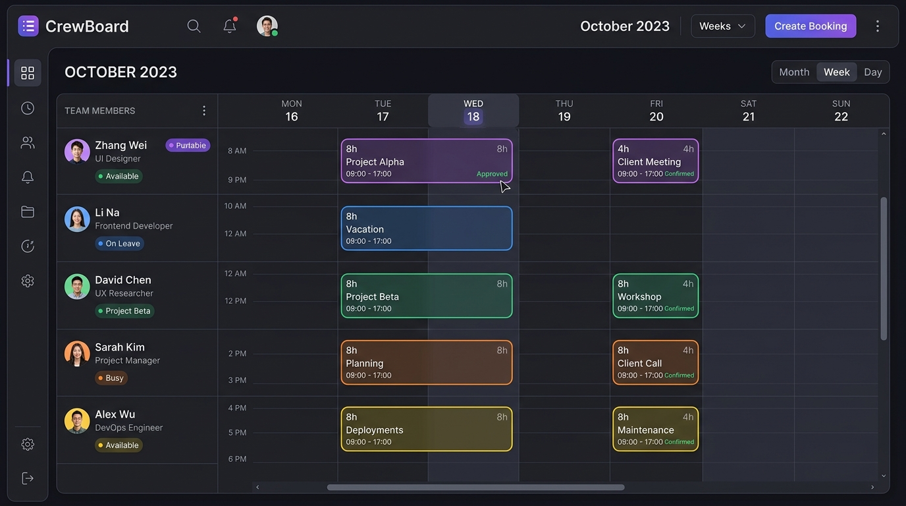

CrewBoard 通过极简、高性能的前后端架构，实现了传统排班软件难以企及的流畅体验与高开发灵活性。
直观的周/月日历视图。支持添加项目小时预订，通过不同的颜色代表不同的项目与状态，完美支撑跨项目人力调配。
支持员工每天按项目填报实际耗时。提供「从排程复制」的快捷功能，将规划工时一键转为实际填报，极大地简化日常报工流程。
内置人员饱和度与利用率计算，以及项目累计投入分析。支持多 Sheet 高格式的 Excel 导出，方便向决策层和财务团队汇报。
快速建立客户、项目库以及团队资源的匹配。管理员可以通过专属色标、部门/团队分类来标识人员，便于在大团队中快速过滤和查找。
基于企业代码隔离多企业数据。拥有 Admin（全权所有者）、Manager（创建/编辑负责项目）、Basic（只读查看自己排程）三级角色控制。
人员休假计划在排程日历上智能体现。系统集成了年度节假日抓取脚本，每年 12 月自动抓取下一年的法定节假日与调休，排班永不冲突。
CrewBoard 依靠嵌入式的 SQLite 数据库和无打包的前端设计，使得部署成本极低。请选择您的运行环境：